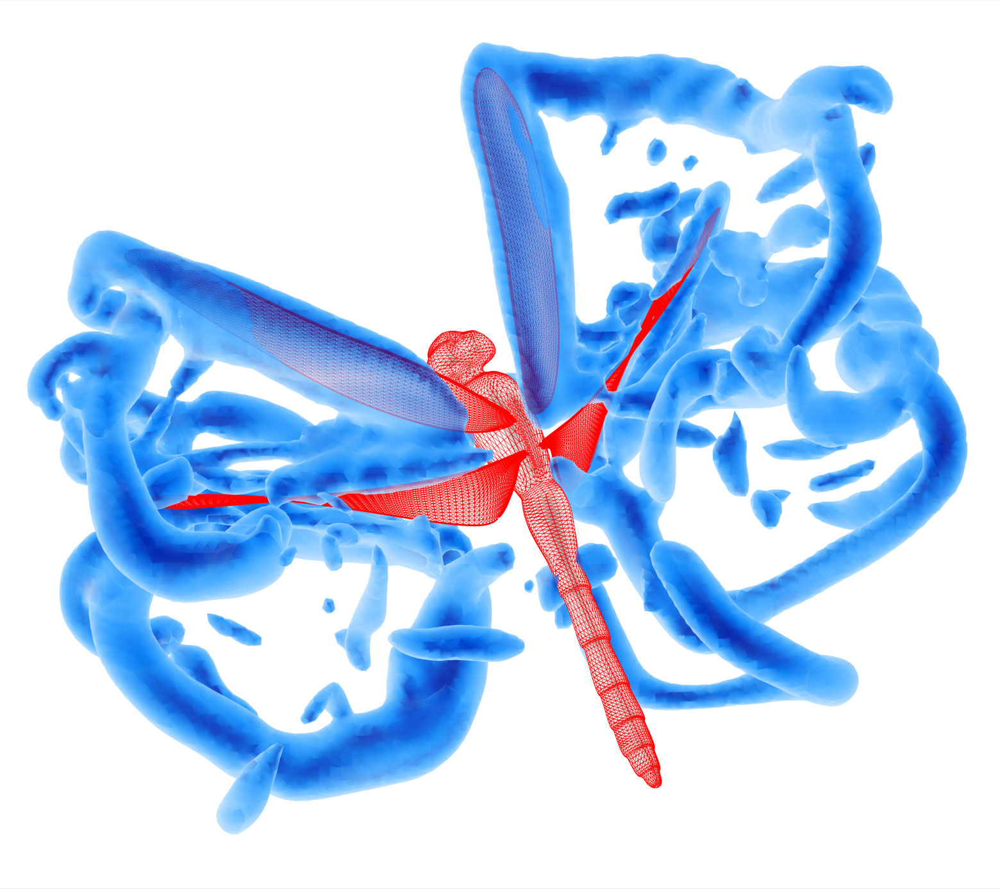

Gallery

Center aligned text on all viewport sizes.
Experimental setup for free flight experiments


I am recent Ph.D. in mechanical and aerospace engineering with a strong background in fluid dynamics (unsteady aero and hydrodynamics), experimental design, bio-inspired engineering and physics-based modeling. My interests lie in using fundamental physics analysis to solve complex problems that drive the development of new approches or new technolgies to make the world more efficient. I am currently looking for opportunities, feel free to contact me.
Unraveled the impressive flight mechanics and the unsteady low-speed aerodynamics of natural fliers (insects) to inspire the design of versatile micro-aerial vehicle (MAV) or drones using a combination of high-speed photography, invivo experiments and computational fluid dynamics (CFD) simulations.
Collaborated with diverse teams as part of multi-university collaborations funded by ONR, AFSOR and NSF.
Presented results in form of scientific journal pubilcations, oral presentations and conference proceedings.
Thesis:"Unsteady aerodynamics and mechanics of force generation in insect free flight"
GPA: 3.92
Thesis:"Insights into the physics of flapping flight: Extending axioms of force generation, flow features and body deformation in insect flight"
GPA: 3.92
Thesis:"Multi-propeller All-electric NASA Transit Aircraft (MANTA)"
Thesis:"Environmental and Socio-Cultural Impacts and Implications of Technological Leapfrogging in Sub-Saharan Africa"
Cummulative GPA: 3.85, Major GPA:3.91
Grade: 96/100 (1st position)
English,
Yoruba.
FORTRAN 95/2003,
Matlab,
Python,
C++.
Tecplot 360,
Visual Studio,
Unix,
Solidworks,
Maya,
Adobe creative suite,
Experimental gear.
Effective oral and written communication,
Idea generation,
Project management,
Human relations,
Leadership and collaborative skills.
Apart from being an engineer/scientist, I enjoy playing pick up soccer because it is an opportunity to have fun and meet new people.
Center aligned text on all viewport sizes.